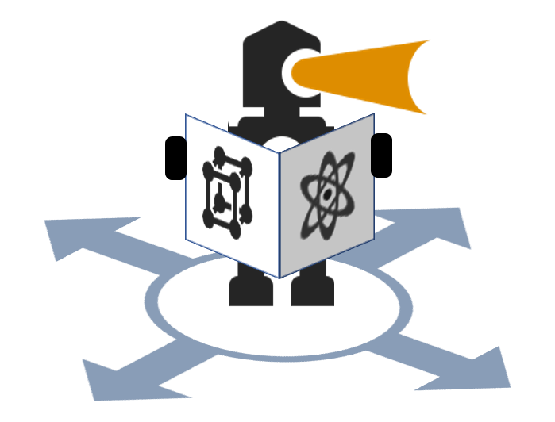

Home page content
Welcome to REMI! This site will host a diverse collection of jupyter notebooks for analyzing materials data. On REMI you will find curated notebooks searchable by target material system, synthesis and characterization equipment, and machine learning method.